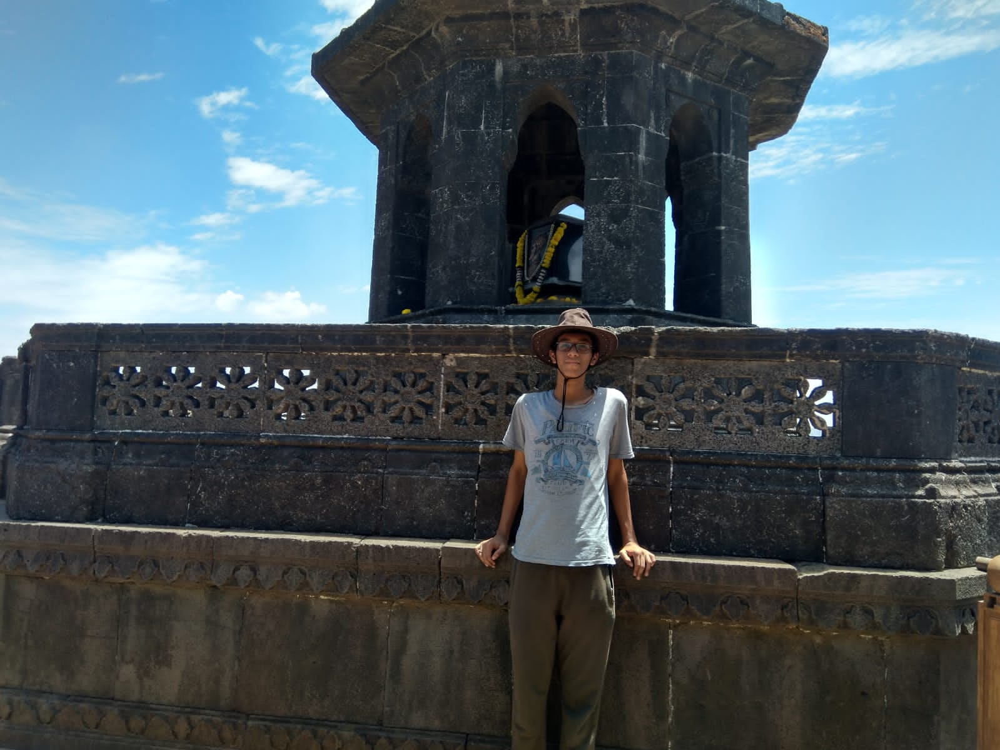

Hey! Its me, Prathamesh

Objective
My vision is to see a world where everyone is capable of living a sustainable life, have more employment opportunities out there, opportunities for the specially abled, and much more... which is why I have chosen to learn full stack web development as I view it as a possible way to achieve all these goals. I thank angela for the amazing workshop which really helped me kickstart this journey of mine
Education
- Elpro International School | Class 9 - 98%
- CISSP certified by Simplilearn
- Grade A in intermediate art exam
Work Experience
- Freelancing on Canva
- Ex-Affiliate marketer
- Made logos and thumbnails for podcast, youtube and blogging site
Skills
- Logo design
- Python - machine learning and computer vision
- Public Speaking and Communication
- A high EQ and IQ
- Full stack web development
- Problem solving
- Creative and Critical thinking
- Speed Typing
- Canva
- AI tools
Awards n Certifications
- 1st rank in Scool level IMO, ISSO, NCO and 2nd rank in NSO
- Zonal Level 3rd rank in ISSO and 5th rank in NCO
- CISSP certification by Simplilearn
- Ethical Hacking certification by simplilearn
- 1st runner up in the Intra-School basketball competition
- Brown Belt in Karate
- Online Rapid chess tournament silver medalist
About Me
Contact Me